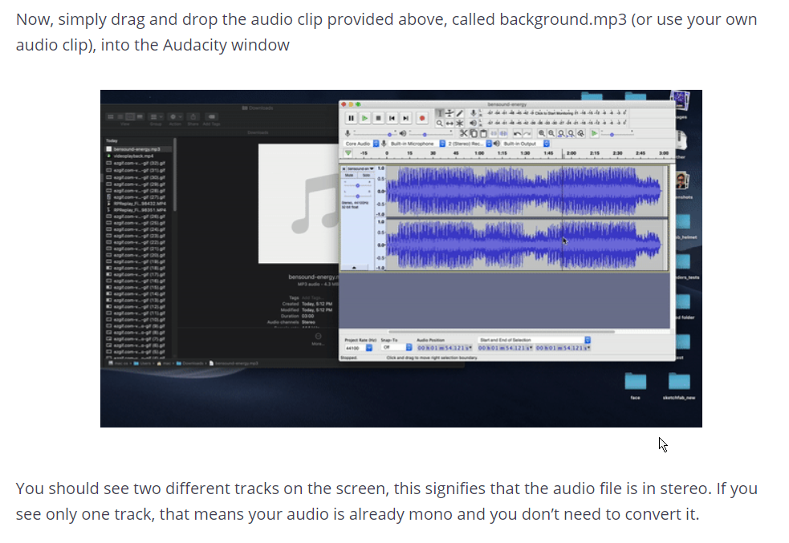

Any audio file that you need to use in Spark AR first needs to be converted to Mono and then imported.
First, you’ll need audio editing software. We recommend Audacity, an open-source and free application that lets you edit and manipulate audio.
